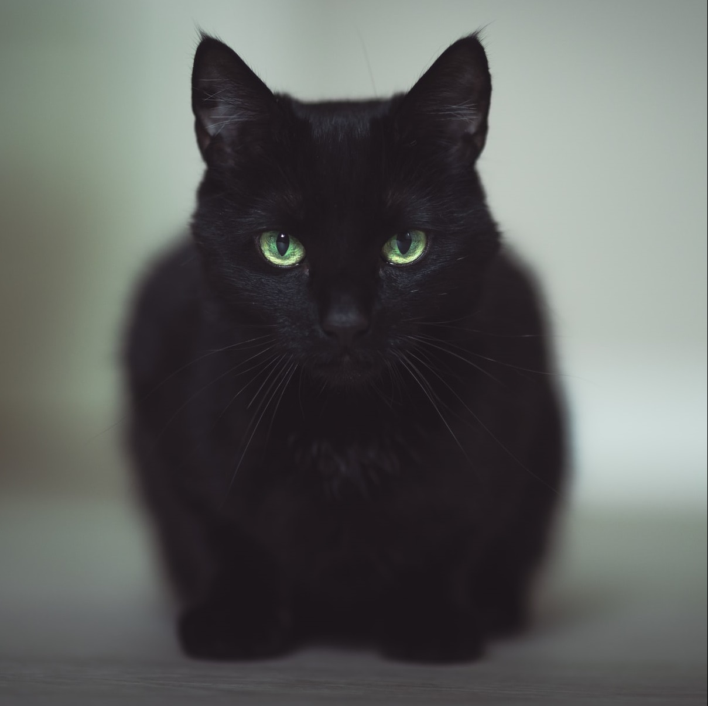

- Lubię długie samotne wędrówki
- Kocie drzemki to moja specjalność
- Dobre jedzenie to moja pasja

Misia
Jestem spokojną kotką o łagodnym charakterze. Mam 12 lat.
Łapię krety, myszy, nornice, ptaki wszelkiego rodzaju oraz czasem
jaszczurki. Moje ulubione miejsce spania to karton oraz szuflada
ze skarpetkami.